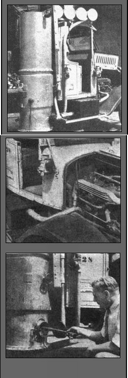
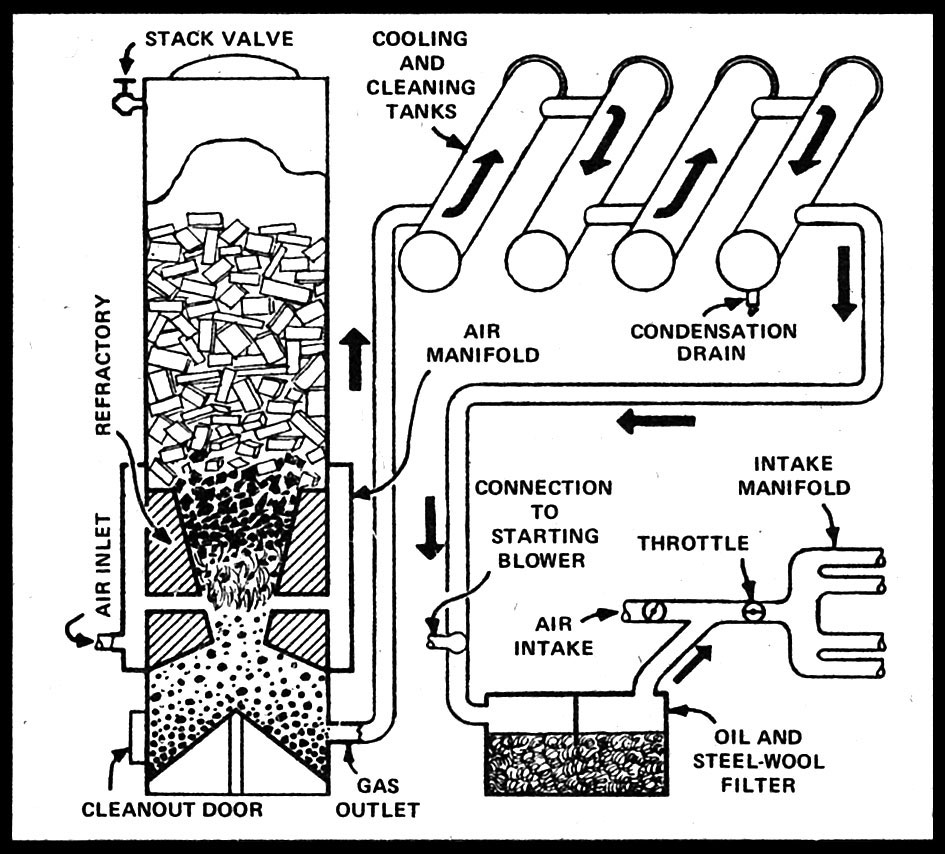

Hardwood chips are now driving the first solid-fuel trucks to appear on American Highways. The standard gasoline motors of these trucks have been converted to the use of producer gas, a mixture composed of hydrogen, methane, carbon monoxide, carbon dioxide and various tar gases. Pictured here is an experimental conversion made by the Rheingold Brewery of New York City, and believed to be among the first efforts in this country to adapt producer gas for use in commercial vehicles.
Under ordinary driving conditions, wood is added to the gas producer every 50 to 60 miles. Hardwood, cut into chips less than 4" in length to prevent arching or pocketing in the generator, is used in preference to softwood such as pine because it leaves fewer tars and gummy residues. Even so, the cooling tanks and filters on the vehicle must be cleaned every 900 miles, and motor overhauls are in order every 5,000 to 8,000 miles.
Technical studies indicate that about 1.76 lb. of wood are required per horsepower hour. Gas producers fueled by coal or coke are more efficient, but they are much larger and more complicated. With wood, if no major changes are made in converting the engine, the maximum horsepower is about 70 percent of that on gasoline, provided that the spark is advanced and the fire is properly managed. But if the compression ratio of the motor is increased (producer gas knocks less readily than gasoline), horsepower can be pushed up to 85 or 90 percent of the gasoline rating. In general, tests show that substantially more gear-shifting is needed with producer gas.
When a cold start is to be made, wood is added from the top of the hopper and an electric fan is attached to the gas offtake pipe so as to suck a current of air through the producer. Ten minutes after the wood is lighted, the generator manufactures enough gas to run the truck. Starting the engine on gasoline will create sufficient suction to build up the fire, but this takes much longer.
As shown in the schematic drawing, the gas producer is a downdraft type. Air is supplied to the fire - within the conical walls of the refractory, or gas-generating area - by five air nozzles which run through the firebrick from the outer air jacket. The gas, produced by partial combustion of the fuel, flows out the offtake pipe to four cleaning and cooling tanks, fitted with baffles and connected in series. As it is cooled the gas becomes denser (under Boyle's law) and hence more Btu's are supplied to the motor at each intake stroke.
A condensation trap is provided at the end of the fourth cooling tank to catch any moisture deposited by the gas, which next passes through a steel-wool filter and oil bath in a tank on the running board. Just before the gas pipe reaches the intake manifold, a valve admits air to the gas, at about a one-to-one ratio, and the mixture is then fed past the throttle to the motor.
During standby periods with the motor off, the stack valve at the top of the producer is opened, giving enough air to keep the fire going. This valve is also used to release excess gases at the end of the day. A dashboard control affords a means of varying the amount of air mixed with the gas as it enters the motor; the correct setting changes frequently with the behavior of the fire and the speed of the engine. In practice, the driver controls speed with the throttle and intermittently readjusts the air-gas mixture for best performance. Direct linkage of the two controls is not practicable.
Whether such vehicles, long familiar in Europe, will succeed in replacing conventional trucks in this country depends in large part on whether gasoline shortages become more acute. Certainly the indications are that reduced power and more frequent servicing lay heavy handicaps on producer gas in free competition with gasoline.
|
 Top: Herman Reese adds wood to hopper of first truck he converted. Middle: Before it enters the engine of a vehicle, producer gas is mixed with air by the perforated valve on the pipe. Bottom: Chunks of charcoal-like ash are removed from the generator daily. |
 Diagram of a gas producer. |
|